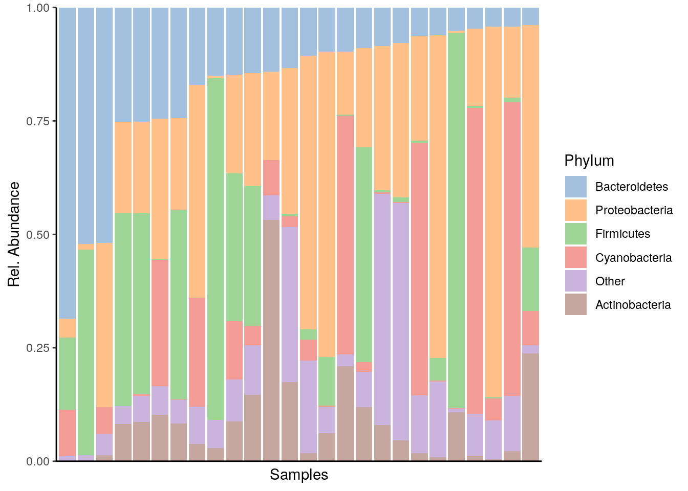
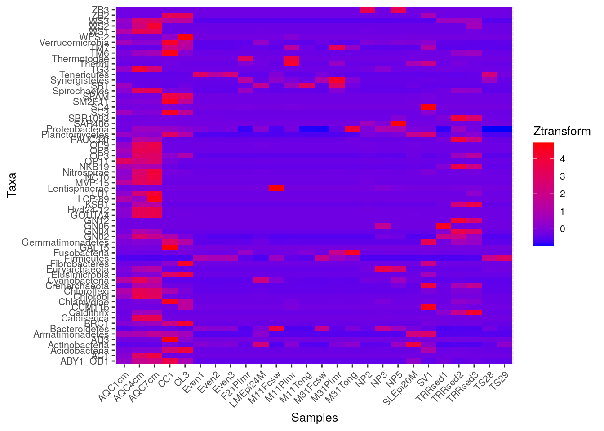
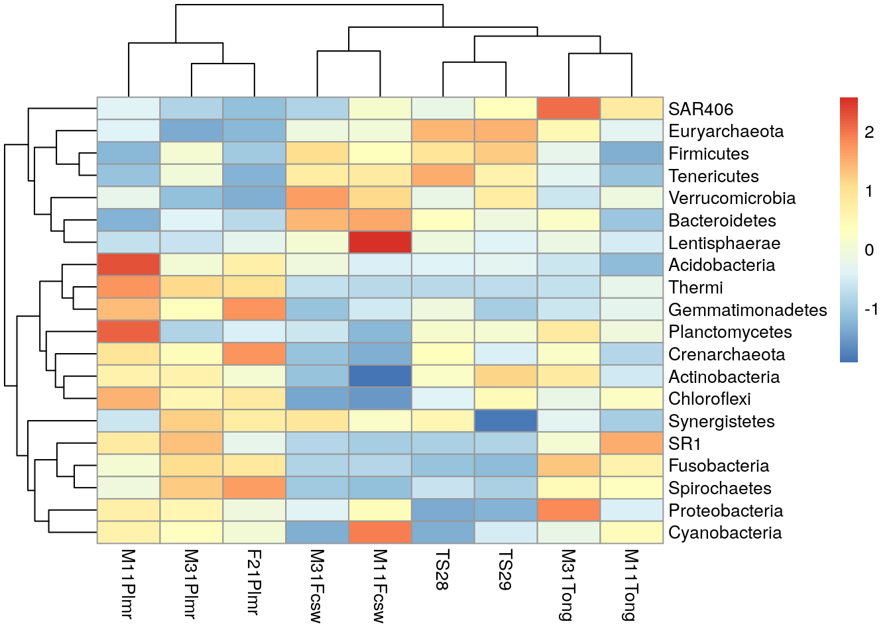
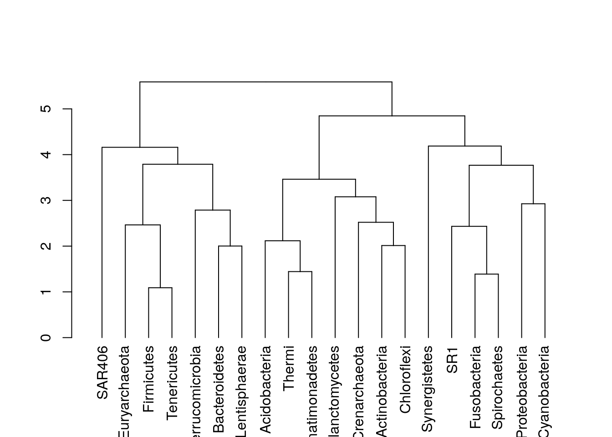
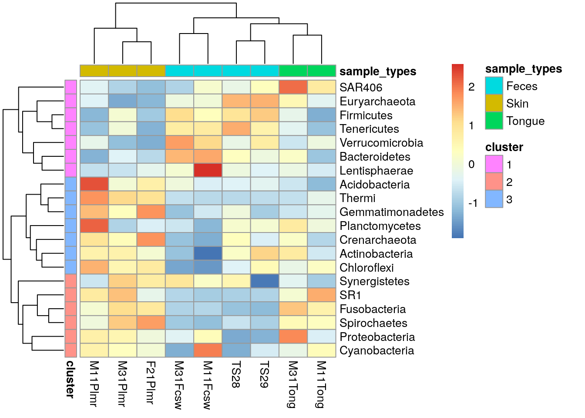

Chapter 9 Microbiome Community
## Loading required package: ecodistlibrary(mia)
data("GlobalPatterns", package="mia")
tse <- GlobalPatterns9.1 Community composition
9.1.1 Composition barplot
A typical way to visualize microbiome composition is by using composition barplot. In the following, relative abundance is calculated and top taxa are retrieved for the Phylum rank. Thereafter, the barplot is visualized ordering rank by abundance values and samples by “Bacteroidetes”:
library(miaViz)
# Computing relative abundance
tse <- relAbundanceCounts(tse)
# Getting top taxa on a Phylum level
tse_phylum <- agglomerateByRank(tse, rank ="Phylum", onRankOnly=TRUE)
top_taxa <- getTopTaxa(tse_phylum,top = 5, abund_values = "relabundance")
# Renaming the "Phylum" rank to keep only top taxa and the rest to "Other"
phylum_renamed <- lapply(rowData(tse)$Phylum,
function(x){if (x %in% top_taxa) {x} else {"Other"}})
rowData(tse)$Phylum <- as.character(phylum_renamed)
# Visualizing the composition barplot, with samples order by "Bacteroidetes"
plotAbundance(tse, abund_values="relabundance", rank = "Phylum",
order_rank_by="abund", order_sample_by = "Bacteroidetes")
9.1.2 Composition heatmap
Community composition can be visualized with heatmap, where the horizontal axis represents samples and the vertical axis the taxa. Color of each intersection point represents abundance of a taxon in a specific sample.
Here, abundances are first CLR (centered log ratio) transformed, and then Z transformation is applied to CLR-transformed data. After that, abundances are plotted at Phylum level.
library(ggplot2)
# Does clr-transformation
tse_phylum <- transformSamples(tse_phylum, method = "clr", pseudocount = 1)
# Does z-transformation
tse_phylum <- transformFeatures(tse_phylum, abund_values = "clr",
method = "z", name = "clr_z")
# Melts the assay
df <- meltAssay(tse_phylum, assay_name = "clr_z")
# Determines the scaling of colours
maxval <- round(max(abs(df$clr_z)))
limits <- c(-maxval, maxval)
breaks <- seq(from = min(limits), to = max(limits), by = 0.5)
colours <- c("darkblue", "blue", "white", "red", "darkred")
# Creates a ggplot object
ggplot(df, aes(x = SampleID, y = FeatureID, fill = clr_z)) +
geom_tile() +
scale_fill_gradientn(name = "CLR + Z transform",
breaks = breaks, limits = limits, colours = colours) +
theme(text = element_text(size=10),
axis.text.x = element_text(angle=45, hjust=1),
legend.key.size = unit(1, "cm")) +
labs(x = "Samples", y = "Taxa")
pheatmap is a package that provides methods to plot clustered heatmaps.
if(!require(pheatmap)){
install.packages("pheatmap")
}
library(pheatmap)
# Takes subset: only samples from feces, skin, or tongue
tse_phylum_subset <- tse_phylum[ , colData(tse_phylum)$SampleType %in% c("Feces", "Skin", "Tongue") ]
# Does clr-transformation
tse_phylum_subset <- transformSamples(tse_phylum_subset, method = "clr", pseudocount = 1)
# Does z-transformation
tse_phylum_subset <- transformFeatures(tse_phylum_subset, abund_values = "clr",
method = "z", name = "clr_z")
# Get n most abundant taxa, and subsets the data by them
top_taxa <- getTopTaxa(tse_phylum_subset, top = 20)
tse_phylum_subset <- tse_phylum_subset[top_taxa, ]
# Gets the assay table
mat <- assay(tse_phylum_subset, "clr_z")
# Creates the heatmap
pheatmap(mat)
We can create clusters by hierarchical clustering and visualize them with dendrogram.
# Package for creating dendrograms
if(!require(dendextend)){
install.packages("dendextend")
}
library(dendextend)
# Hierarchical clustering
taxa_clusters <- hclust(dist(mat), method = "complete")
# Creates a dendrogram
taxa_dendrogram <- as.dendrogram(taxa_clusters)
# Plots it
plot(taxa_dendrogram)
Based on dendrogram, we decide to create three clusters.
# Creates clusters
taxa_clusters <- cutree(tree = taxa_dendrogram, k = 3)
# Prints taxa and their clusters
taxa_clusters ## Firmicutes Bacteroidetes Proteobacteria Actinobacteria
## 1 1 2 3
## Cyanobacteria Fusobacteria Tenericutes Verrucomicrobia
## 2 2 1 1
## Lentisphaerae Euryarchaeota Acidobacteria Spirochaetes
## 1 1 3 2
## Planctomycetes Thermi Chloroflexi SR1
## 3 3 3 2
## Synergistetes Crenarchaeota Gemmatimonadetes SAR406
## 2 3 3 1# Creates clusters, and adds information to rowData
rowData(tse_phylum_subset)$clusters <- cutree(tree = taxa_dendrogram, k = 3)
# Prints taxa and their clusters
rowData(tse_phylum_subset)$clusters## Firmicutes Bacteroidetes Proteobacteria Actinobacteria
## 1 1 2 3
## Cyanobacteria Fusobacteria Tenericutes Verrucomicrobia
## 2 2 1 1
## Lentisphaerae Euryarchaeota Acidobacteria Spirochaetes
## 1 1 3 2
## Planctomycetes Thermi Chloroflexi SR1
## 3 3 3 2
## Synergistetes Crenarchaeota Gemmatimonadetes SAR406
## 2 3 3 1Now we can create heatmap with additional annotations.
# Creates data frame that includes cluster data
taxa_clusters <- rowData(tse_phylum_subset)$clusters
taxa_clusters <- as.character(taxa_clusters)
taxa_clusters <- data.frame(cluster = taxa_clusters)
row.names(taxa_clusters) <- rownames(tse_phylum_subset)
# Creates data frame that includes data on sample type
sample_types <- unfactor(colData(tse_phylum_subset)$SampleType)
sample_types <- data.frame(sample_types = sample_types)
row.names(sample_types) <- colnames(tse_phylum_subset)
pheatmap(mat, annotation_row = taxa_clusters,
annotation_col = sample_types)
In addition to pheatmap package, there are also other packages that provide functions for more complex heatmaps. One example is iheatmapr package. Examples of using it you can find from its vignette.